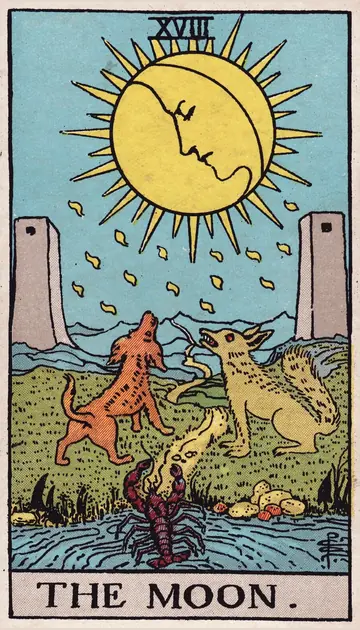

正位置月の正位置
キーワード：不安・あいまい・揺れる気持ち
恋愛
相手の気持ちが見えず、不安を感じやすい時です。
相手の気持ちあなたへの気持ちが、自分でもよくわからずにいるようです。
この先時間がたてば、相手の気持ちが見えてきそうです。
アドバイス不安なときは、事実と想像を分けて考えてみましょう。
気をつけること不安から、相手を疑いすぎないように。
この先時間がたてば、相手の気持ちが見えてきそうです。
アドバイス不安なときは、事実と想像を分けて考えてみましょう。
気をつけること不安から、相手を疑いすぎないように。
人間関係
誤解や思い込みが生まれやすい時です。
相手の気持ちあなたの本心がわからず、不安を感じているようです。
この先誤解が少しずつ解けていきそうです。
アドバイスわからないことは、推測せずに確かめましょう。
気をつけることうわさや憶測に惑わされないように。
この先誤解が少しずつ解けていきそうです。
アドバイスわからないことは、推測せずに確かめましょう。
気をつけることうわさや憶測に惑わされないように。
仕事・学業
先が見えにくく、迷いやすい時期です。
この先霧が晴れるように、状況がはっきりしてきそうです。
アドバイスあいまいな点を、一つずつはっきりさせましょう。
気をつけること見通しの甘い計画は避けましょう。
アドバイスあいまいな点を、一つずつはっきりさせましょう。
気をつけること見通しの甘い計画は避けましょう。
お金
お金の状況が、見えにくい時です。
この先状況がはっきりすれば、不安が晴れそうです。
アドバイス口座や支払いの状況を、確かめておきましょう。
気をつけることよくわからない話や契約には、手を出さないように。
アドバイス口座や支払いの状況を、確かめておきましょう。
気をつけることよくわからない話や契約には、手を出さないように。
生活
気持ちが揺れて、生活が落ち着かない時です。
この先時間がたてば、気持ちが落ち着いてきそうです。
アドバイス夜はスマホを置いて、早めに休みましょう。
気をつけること不安な気持ちのまま、大きな決断をしないように。
アドバイス夜はスマホを置いて、早めに休みましょう。
気をつけること不安な気持ちのまま、大きな決断をしないように。
今日の運勢
気持ちが揺れやすく、はっきりしない日です。
この先ぼんやりしていたことが、明らかになりそうです。
アドバイス無理に決めず、様子を見ましょう。
気をつけること夜に考えごとをしすぎないように。
アドバイス無理に決めず、様子を見ましょう。
気をつけること夜に考えごとをしすぎないように。
逆位置月の逆位置
キーワード：不安が晴れる・本当のことが見える・回復
恋愛
不安が少しずつ晴れて、気持ちが落ち着く時です。
相手の気持ちあなたへの気持ちが、はっきりしてきたようです。
この先不安が消えて、関係が安定していきそうです。
アドバイス見えてきた本当の気持ちを、大切にしましょう。
気をつけること明らかになったことから、目をそらさないように。
この先不安が消えて、関係が安定していきそうです。
アドバイス見えてきた本当の気持ちを、大切にしましょう。
気をつけること明らかになったことから、目をそらさないように。
人間関係
誤解が解けて、関係がはっきりする時です。
相手の気持ちあなたへの誤解が、解けてきているようです。
この先信頼を取り戻せそうです。
アドバイスはっきりしたことを、素直に受け止めましょう。
気をつけること過去の誤解を蒸し返さないように。
この先信頼を取り戻せそうです。
アドバイスはっきりしたことを、素直に受け止めましょう。
気をつけること過去の誤解を蒸し返さないように。
仕事・学業
見えなかった問題が明らかになり、対処できる時期です。
この先状況が整理され、前に進めそうです。
アドバイス明らかになった課題から、順に取り組みましょう。
気をつけること解決したと思って、油断しないように。
アドバイス明らかになった課題から、順に取り組みましょう。
気をつけること解決したと思って、油断しないように。
お金
お金の不安が、少しずつ晴れる時です。
この先見通しが立ち、安心できそうです。
アドバイスわかったことをもとに、計画を立て直しましょう。
気をつけること解決したと思って、油断しないように。
アドバイスわかったことをもとに、計画を立て直しましょう。
気をつけること解決したと思って、油断しないように。
生活
落ち着かない気持ちが、晴れていく時です。
この先穏やかな暮らしが戻りそうです。
アドバイス整ってきた生活を、大切に続けましょう。
気をつけること安心して、生活を崩しすぎないように。
アドバイス整ってきた生活を、大切に続けましょう。
気をつけること安心して、生活を崩しすぎないように。
今日の運勢
もやもやが晴れていく日です。
この先気持ちが晴れやかになりそうです。
アドバイスすっきりした気持ちで、次の一歩を決めましょう。
気をつけること安心して、気を抜きすぎないように。
アドバイスすっきりした気持ちで、次の一歩を決めましょう。
気をつけること安心して、気を抜きすぎないように。
このページの文章は、アプリ「ひとやすみタロット」の結果に使っている文章です。アプリでは、あなたの相談や、カードが出た位置（今の状況・これからの流れ・アドバイス）に合わせて、この中から文章を選びます。逆位置の読み方は逆位置のことをご覧ください。